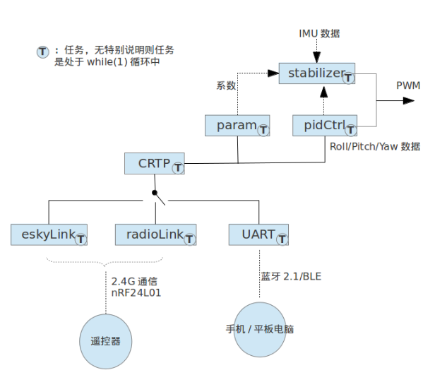

通信協議指的是遙控端和主控之間交互數據的封裝，是一種自行約定的數據封裝格式。我們採用的是Crazyflie項目中定義的CRTP協議。
遙控端和主控之間數據的交互，物理層可以有下面幾種方式：
這幾種不同的物理層通信方式在同一時刻只能夠選擇其中的一種。並且藍牙2.1和藍牙BLE根據安裝的透傳模塊不一樣進行選擇。

在上面示意圖的的通信方式選擇上，最左邊為EskyLink，對應使用宏USE_ESKYLINK來開啟是否選擇該種鏈接方式。
# Make copter firmware to be used with the bootloader, CF controlled with eSky ET6i transmitter
$ make clean && make USE_ESKYLINK=1 CLOAD=1 all
所謂的Esky Protocol，其實就是ESky公司遙控器使用的通信協議。所以如果選用這種通信方式，那麼可以使用ESky航模公司的遙控器進行控制。Crazyflie官網支持ESKY ET6I Remote Control遙控器。
關於ESky公司的2.4G遙控器設備的通信協議，參考ArduinoRCLib項目中的描述：
The Esky 2.4 GHz equipment uses the Nordic NRF2401AG in both the transmitter and receiver. A compatible alternative to this chip is the NRF24L01+ (which is widely available).
ESky相關協議內容暫時不研究。
使用串口作為物理層指的是藍牙透傳模塊（包括藍牙2.1或者藍牙4.0 BLE模塊）。串口配置為115200 8N1，收發異步。
一個可供主控解析的數據包格式，約定如下：
7 6 5 4 3 2 1 0
| Port | Res. | Chan. |
| DATA 0 |
: : : : : : : : :
| DATA 31 |
開始為一個字節的頭，該字節中包括port字段，reserve字段，channel字段。緊跟著該自己，就是0-31個字節的數據，數據的長度是任意的。
頭字節中的port字段用來區分該數據包的功能，常見的包括下面幾個
對於串口傳輸，在上面數據包的最前面需要加上兩個字節0xaaaa的起始數據，在最後加上一個字節的checksum數據。格式如下：
7 6 5 4 3 2 1 0
| 0xAA |
| 0xAA |
| Port | Res | Chan. |
| Packet length |
| DATA 0 |
: : : : : : : : :
| DATA 30 |
| Cksum |
| 0xAA | 0xAA | Header | Length | Data0 | Packet | Cksum |
注意，緊跟在頭後面的第一個data字節，表示後面數據的長度。
操作命令是指用於控制飛行器起飛，前後左右運動的命令，英文commander。操控命令是遙控器最基本，也是最常用的命令。數據包頭中port字段為0x3表示操作命令。Crazyflie操作數據格式約定如下。
| ROLL | PITCH | YAW |THRUST |
0 4 8 12 14 bytes
操作數據一共14個字節，前12個字節分別表示Roll，Pitch，Yaw的值，每個值使用4個字節。後2個字節表示Thrust的值，使用2個字節。
所以，使用串口發送的一個操作命令示例如下：
0xaa 0xaa 0x30 0x0e 0x00 0x00 0x00 0x00 0x00 0x00 0x00 0x00 0x00 0x00 0x00 0x00 0x00 0x00 0x3e